CDesk: 1. BulkRNA pipeline
Our CDesk bulkRNA module comprises of 7 function submodules. Here we present you the CDesk bulkRNA working pipeline and how to use it to analyze your bulkRNA data.
1.1 bulkRNA: Preprocess
The CDesk bulkRNA preprocess pipeline is illustrated in the figure below. The input consists of a directory containing compressed FASTQ files in either paired-end format (xxx_1.fastq.gz/xxx_1.fq.gz and xxx_2.fastq.gz/xxx_2.fq.gz) or single-end format (xxx.fastq.gz/xxx.fq.gz).
The pipeline first checks whether a BAM file corresponding to each FASTQ sequencing file already exists. If it does, the alignment step is skipped, and quantification proceeds after verifying that the BAM file is properly sorted and indexed, thereby saving computational time. Next, each FASTQ file undergoes quality control using FastQC and MultiQC to assess key metrics such as base quality distribution, GC content, and adapter contamination. Following quality assessment, Trim Galore is applied for data cleaning to remove low-quality bases and adapter sequences, ensuring high accuracy in downstream analyses. Subsequently, HISAT2 is used for sequence alignment, mapping the cleaned RNA-seq reads to the reference genome to determine their genomic origins. The resulting SAM files are then converted into sorted and indexed BAM files using Samtools. After format conversion, gene and transcript expression levels are quantified using GFOLD, which computes expression values based on reference genome annotations or transcript assembly results. Following alignment, read distribution across genomic regions—such as exons, introns, and intergenic regions—is analyzed using RSeQC. Finally, FPKM and count-based gene expression matrices are generated and consolidated for downstream analysis. Optionally, users can generate BigWig files from BAM files using bamCoverage, and transposable element (TE) expression levels can be analyzed and quantified using scTE.
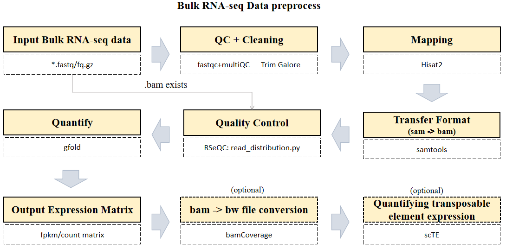
Here is an example about how to use the CDesk HiC preprocess module.
CDesk bulkRNA preprocess \
-i /.../input.csv -o /.../output_directory \
-s mm10 -t 50 -bw -te
| Parameters(*necessary) | Description | Default value |
|---|---|---|
| -i,--input* | The input fq information file | |
| -o,--output* | The output directory | |
| -s,--species* | The species specified | |
| -t,--thread | The number of threads to use | 8 |
| -bw | If specified, perform a bam -> bigwig file transfer (optional) | |
| -te | If specified, perform a TE expression analysis (optional) |
If the pipeline runs successfully, you will see output similar to the figure shown below.
- Bam: Stores the intermediate sam and bam files.
- BW: Stores the bw files.
- Expression: Stores the count and fpkm expression matrix file and gfold intermediate files.
- TE: Stores the scTE results.
- QC: Stores the fastqc and multiqc result.
- Log: Stores the log files of fastqc and multiqc, trim_galore, mapping, gfold, bw generation and scTE.
A successful CDesk bulkRNA preprocess running process
Checking required tools... All required tools are available. --------------------------------------------INITIALIZING---------------------------------------------- RNA-seq data analysis pipeline is now running... Number of threads ---------- 100 Directory of data ---------- /mnt/linzejie/CDesk_test/data/1.RNA/1.preprocess/bam_fq Directory of result ---------- /mnt/linzejie/temp Method of sequencing ---------- 2 Mapping index ---------- /mnt/zhaochengchen/Data/mm10/mm10 Mapping gtf ---------- /mnt/zhaochengchen/Data/mm10/mm10.ncbiRefSeq.WithUCSC.gtf RSeQC bed ---------- /mnt/zhaochengchen/Data/mm10/mm10.refseq.bed Check available bam files Link /mnt/linzejie/CDesk_test/data/1.RNA/1.preprocess/bam_fq/GSM7789776.bam -> /mnt/linzejie/temp/Bam/GSM7789776.bam ---------------------------------------Process fq files----------------------------------------------------- ----------------------------Number 1 fq sample: GSM7789776-------------------------- Available BAM file checked，skip mapping 2025-09-23 14:07:14 fastqc ... Use available BAM: /mnt/linzejie/temp/Bam/GSM7789776.bam ----------------------------Number 2 fq sample: GSM7789777-------------------------- No available BAM file checked，do mapping 2025-09-23 14:10:13 fastqc ... Mapping ... 2025-09-23 14:13:16 trim_galore ... 2025-09-23 14:15:09 hisat2 ... 2025-09-23 14:19:32 samtools view ... ---------------------------------------Process bam file---------------------------------------------------- ----------------------------Number 1 bam sample: GSM7789776-------------------------- BAM index... 2025-09-23 14:20:07 RSeQC ... processing /mnt/zhaochengchen/Data/mm10/mm10.refseq.bed ... Done processing /mnt/linzejie/temp/Bam/GSM7789776.bam ... Finished Calculate gene expression levels 2025-09-23 14:21:59 gfold count ... ----------------------------Number 2 bam sample: GSM7789777-------------------------- Sort BAM... [bam_sort_core] merging from 0 files and 100 in-memory blocks... BAM index... 2025-09-23 14:26:53 RSeQC ... processing /mnt/zhaochengchen/Data/mm10/mm10.refseq.bed ... Done processing /mnt/linzejie/temp/Bam/GSM7789777.bam ... Finished Calculate gene expression levels 2025-09-23 14:28:49 gfold count ... 2025-09-23 14:33:12 Merge expression matrix ... Expression matrix has been merged... Preprocess Done ----------------------------- Start generating BW files--------------------------- Number 1 sample: /mnt/linzejie/temp/Bam/GSM7789776.bam 2025-09-23 14:33:12 bamCoverage ... Number 2 sample: /mnt/linzejie/temp/Bam/GSM7789777.bam 2025-09-23 14:33:24 bamCoverage ... ----------------------------- Start scTE analysis--------------------------- ---------------------------------- Reference data /mnt/liudong/data/Genome/mm10/mm10.exclusive.idx -------------------------------- 2025-09-23 14:33:36 scTE ... ----------------------------- Number 1 sample: GSM7789776 --------------------------- 2025-09-23 14:39:11 scTE ... ----------------------------- Number 2 sample: GSM7789777 --------------------------- --------------------------Merge scTE result------------------------------- --------------------------scTE done--------------------------
What should the input file look like?
sample,fq1,fq2,bam,ports GSM7789776,,,/mnt/linzejie/CDesk_test/data/1.RNA/1.preprocess/bam_fq/GSM7789776.bam,2 GSM7789777,/mnt/linzejie/CDesk_test/data/1.RNA/1.preprocess/bam_fq/GSM7789776_1.fastq.gz,/mnt/linzejie/CDesk_test/data/1.RNA/1.preprocess/bam_fq/GSM7789777_2.fastq.gz,,2 5 columns: - sample: Sample name - fq1: Read 1 file (_1.fastq) from paired-end sequencing - fq2: Read 2 file (_1.fastq)" from paired-end sequencing - bam: Corresponding bam files (optional) - ports: Number of ports (1/2) For single-end data, the first FASTQ file will be used; if BAM files are provided, the alignment step will be skipped to accelerate the workflow.
1.2 bulkRNA: Correlation
The CDesk bulkRNA correlation module performs correlation analysis on RNA-seq data across different samples to visualize sample relationships. By calculating and displaying sample similarities, it enables researchers to assess overall data structure. Users can optionally apply removeBatchEffect or ComBat batch effect correction methods to adjust for technical variations. Subsequently, Principal Component Analysis (PCA) plots, Multidimensional Scaling (MDS) plot and correlation heatmaps are generated to help researchers interpret sample distribution and underlying patterns in the data.
Here is an example about how to use the CDesk bulkRNA correlation module.
CDesk bulkRNA correlation \
-i /.../expression.csv \
-o /.../output_directory \
--group /.../group.csv --batch combat
| Parameters(*necessary) | Description | Default value |
|---|---|---|
| -i,--input* | the input gene expression file (.csv), column name as sample, row name as gene | |
| -o,--output* | The output directory | |
| --group* | The grouping file | |
| --batch | Specify the batch effect removing method {no,removeBatchEffect,combat} | no |
| --width | The plot width | 8 |
| --height | The plot height | 6 |
If the pipeline runs successfully, there would be a correlation heatmap pdf file, a PCA plot pdf file and a MDS plot in the output directory.
 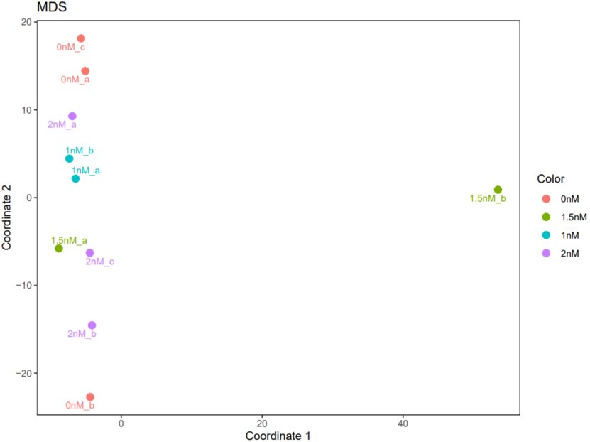
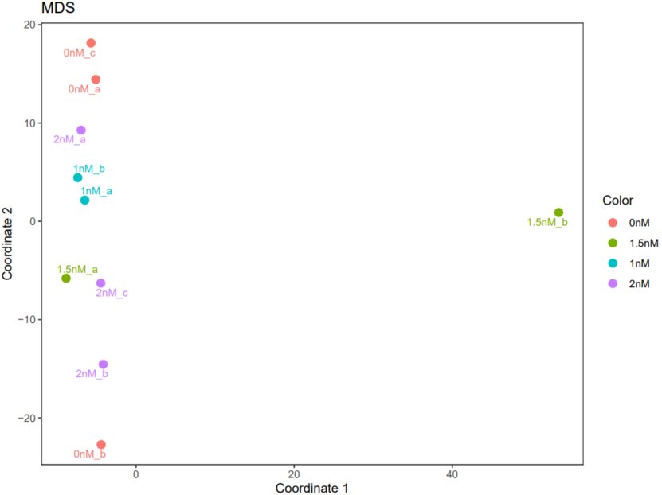
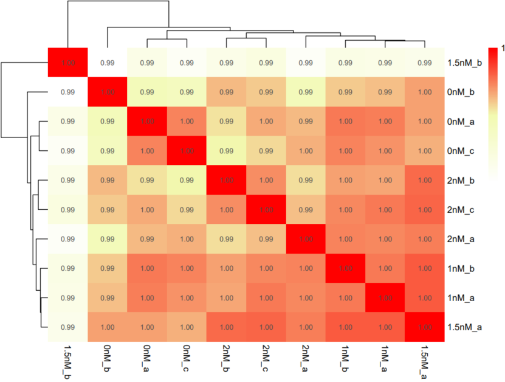
A successful CDesk bulkRNA correlation running process
Found 15674 genes with uniform expression within a single batch (all zeros); these will not be adjusted for batch. Found4batches Adjusting for0covariate(s) or covariate level(s) Standardizing Data across genes Fitting L/S model and finding priors Finding parametric adjustments Adjusting the Data Done, you can check the results now
What should the grouping file look like?
sample,group,tag,batch PlaB_0nM_a,0nM,0nM_a,0 PlaB_0nM_b,0nM,0nM_b,0 PlaB_1nM_a,1nM,1nM_a,1 PlaB_0nM_c,0nM,0nM_c,0 PlaB_1.5nM_a,1.5nM,1.5nM_a,1.5 PlaB_2nM_a,2nM,2nM_a,2 PlaB_2nM_b,2nM,2nM_b,2 PlaB_1.5nM_b,1.5nM,1.5nM_b,1.5 PlaB_2nM_c,2nM,2nM_c,2 PlaB_1nM_b,1nM,1nM_b,1 4 columns: - sample: The same samples in the expression matrix file columns - group: Set the same color in the PCA and MDS plot - tag: Set the tag in the plot - batch: Process as the same batch group (optional if the batch parameter is no)
1.3 bulkRNA: DEG
The CDesk bulkRNA DEG (differential expressed genes) module performs differential expression analysis on bulk RNA-seq data and provides three analytical methods: DESeq2, adjusted-t, and GFOLD. DESeq2 takes a count-based expression matrix as input, adjusted-t accepts either count or FPKM expression matrices, and GFOLD directly uses BAM files for analysis and is useful when no replicate is available. Following differential expression analysis, results are visualized using heatmaps and volcano plots or MA plots to illustrate gene expression patterns and the significance of changes across different conditions.
Here is an example about how to use the CDesk HiC matrix module.
# Deseq2 (Only accept count integer expression matrix)
CDesk bulkRNA DEG deseq2 \
-i /.../count_expression_matrix.csv -o /.../output_directory \
--group /.../grouping.csv -p --fc 1 --pval 0.05 --gene /.../genes.txt
# adjusted-t
CDesk bulkRNA DEG adjusted_t \
-i /.../expression_matrix.csv -o /.../output_directory \
--group /.../grouping.csv -p --fc 1 --pval 0.05 --top_num 1000
# gfold
CDesk bulkRNA DEG gfold \
-i /.../grouping_file.csv -o /.../output_directory \
-t 50 -s species -p --gene /.../genes.txt
| Parameters(*necessary) | Description | Default value |
|---|---|---|
| deseq2,adjusted_t | ||
| -i,--input* | The input expression matrix file | |
| -o,--output* | Output directory | |
| --group* | The grouping file | |
| -p | Whether to plot or not | |
| --gene | Interested gene file to mark in the vocalno plot and heatmap | |
| --top_num | Number of top differential expression genes for heatmap if no gene file provided | 500 |
| --fc | fold change threshold of DEGs | 1 |
| --pval | p_adjusted threshold of DEGs | 0.05 |
| --width | Plot width | 5 |
| --height | Plot height | 5 |
| gfold | ||
| -i,--input* | Input bam information file | |
| -o,--output* | Output directory | |
| -s,--species* | The species specified | |
| -p | Whether to plot or not | |
| --gene | Interested gene file to mark in the MA plot and heatmap | |
| --top_num | Number of top differential expression genes for heatmap if no gene file provided | 500 |
| --gfold | gfold threshold of DEGs | 1 |
| -t,--thread | Number of threads | 20 |
| --width | Plot width | 5 |
| --height | Plot height | 5 |
If the pipeline runs successfully, for deseq2 and adjusted_t analysis, there would be volcano plots, a heatmap plot and deg result csv files in the output directory. For gfold analysis, there would be a heatmap plot, MA plots, deg result files, expression matrix files, intermediate gfold readCnt files and gfold analysis result files.
A successful CDesk bulkRNA DEG gfold running process
no readcnt files provided:>>>2025-09-24 11:40:09 Tranfer from bam to readcnt format for GSM7789776 >>>2025-09-24 11:40:09 Tranfer from bam to readcnt format for GSM7789777 >>>2025-09-24 11:44:52 Start gfold analysis >>>2025-09-24 11:45:22 Do MD plot and plot heatmap Done, you can check the results now. readcnt files provided:Find /mnt/yutiancheng/CDesk/CDesk/test_0512/1.RNA/1.preprocess/test/Expression/GSM7789778.read_cnt, copy Find /mnt/yutiancheng/CDesk/CDesk/test_0512/1.RNA/1.preprocess/test/Expression/GSM7789780.read_cnt, copy Find /mnt/yutiancheng/CDesk/CDesk/test_0512/1.RNA/1.preprocess/test/Expression/GSM7789784.read_cnt, copy Find /mnt/yutiancheng/CDesk/CDesk/test_0512/1.RNA/1.preprocess/test/Expression/GSM7789779.read_cnt, copy Find /mnt/yutiancheng/CDesk/CDesk/test_0512/1.RNA/1.preprocess/test/Expression/GSM7789781.read_cnt, copy Find /mnt/yutiancheng/CDesk/CDesk/test_0512/1.RNA/1.preprocess/test/Expression/GSM7789782.read_cnt, copy Find /mnt/yutiancheng/CDesk/CDesk/test_0512/1.RNA/1.preprocess/test/Expression/GSM7789776.read_cnt, copy Find /mnt/yutiancheng/CDesk/CDesk/test_0512/1.RNA/1.preprocess/test/Expression/GSM7789777.read_cnt, copy Find /mnt/yutiancheng/CDesk/CDesk/test_0512/1.RNA/1.preprocess/test/Expression/GSM7789783.read_cnt, copy >>>2025-09-24 11:40:38 Start gfold analysis >>>2025-09-24 11:47:11 Do MD plot and plot heatmap Done, you can check the results now.
What should the grouping file look like?
sample,group,2C_vs_4C,2C_vs_8C GSM7789776,2C,1,1 GSM7789777,2C,1,1 GSM7789778,2C,1,1 GSM7789779,4C,-1,0 GSM7789780,4C,-1,0 GSM7789781,4C,-1,0 GSM7789782,8C,0,-1 GSM7789783,8C,0,-1 GSM7789784,8C,0,-1 columns: - sample: The same samples in the expression matrix file columns - group: Set the group for heatmap - other columns: Do 1 vs -1(control) DEG analysis, column name set as output prefix
What should the gfold grouping file look like?
sample,group,bam,readcnt,2C_vs_4C GSM7789776,2C,/mnt/linzejie/CDesk_test/result/1.RNA/1.preprocess/test/Bam/GSM7789776.bam,/mnt/linzejie/CDesk_test/result/1.RNA/1.preprocess/test/Expression/GSM7789776.read_cnt,1 GSM7789777,4C,/mnt/linzejie/CDesk_test/result/1.RNA/1.preprocess/test/Bam/GSM7789777.bam,/mnt/linzejie/CDesk_test/result/1.RNA/1.preprocess/test/Expression/GSM7789777.read_cnt,-1 columns: - sample: Set the sample name - group: Set the group for heatmap - readcnt(optional): Provide the readcnt files to skip the bam->readcnt step - other columns: Do 1 vs -1(control) DEG analysis, column name set as output prefix
1.4 bulkRNA: Enrich
CDesk bulkRNA enrich module performs gene functional enrichment analysis. It accepts either a user-specified gene list for GO and KEGG enrichment analysis, or a ranked gene list file (e.g., DEG result file) for GSEA analysis. The module outputs enrichment results along with visualization plots of enriched functional pathways. By default, it generates plots for the top 10 most significant GO and KEGG terms of each ontology and the top 5 most significant GSEA pathways. Users can customize the visualizations by modifying the enrichment result file or by specifying particular pathways of interest.
Here is an example about how to use the CDesk bulkRNA enrich module.
# GO and KEGG
# single sample
CDesk bulkRNA enrich analyze \
-i /.../genes.txt -o /.../output_directory \
-s mouse --type single
# single sample custom (Specify the reference customer file instead of species)
CDesk bulkRNA enrich analyze \
-i /.../genes.txt -o /.../output_directory \
--custom /.../custom.txt --type single
# multiple sample
CDesk bulkRNA enrich analyze \
-i /.../multi.csv -o /.../output_directory \
-s mouse --type multi
# multiple sample custom
CDesk bulkRNA enrich analyze \
-i /.../multi.csv -o /.../output_directory \
--custom /.../custom.txt --type multi
# GO and KEGG custom plot
# single sample
CDesk bulkRNA enrich plot \
-i /.../enrichment_results.csv \
-o /.../output_directory --type single
# multiple sample
CDesk bulkRNA enrich plot \
-i /.../enrichment_results_combine.csv \
-o /.../output_directory --type multi
# GSEA (custom plot)
CDesk bulkRNA enrich GSEA \
-i /.../ranked_gene_list_file.csv -o /.../output_directory \
-s pig (--path /.../paths.txt)
| Parameters(*necessary) | Description | Default value |
|---|---|---|
| analyze | GO and KEGG functional encichment analysis | |
| -i,--input* | The single column file of interested genes (SYMBOL) for single sample or the multiple sample gene list file | |
| -o,--output* | The output directory | |
| --type* | Analyze type: single sample/multiple samples | {simple,multi} |
| --custom | The reference customer file containing two columns for custom analysis (every row is consisted of two factors: the customer term name and gene of interests separated by tab) | |
| --width | Plot width | 10 |
| --height | Plot height | 6 |
| plot | GO and KEGG custom plot(You can manually modify the GO and KEGG result file then plot) | |
| -i,--input* | The enrichment result file | |
| -o,--output* | The output directory | |
| --type* | Analyze type: single sample/multiple samples | {simple,multi} |
| --width | Plot width | 10 |
| --height | Plot height | 6 |
| GSEA | GSEA functional encichment analysis | |
| -i,--input* | The ranked gene list file (e.g., DEG result file) | |
| -o,--output* | The output directory | |
| -s,--species* | The species specified | {human,mouse,pig,chicken,rat} |
| --cols | Columns used | gene_name,log2FoldChange |
| --path | Specify the paths to plot | |
| --width | Plot width | 7 |
| --height | Plot height | 7 |
If the pipeline runs successfully, there would be a functional enrichment analysis result file, a bubble plot and bar plot for GO and KEGG single sample analysis. There would be a combined functional enrichment analysis result file and a combined bubble plot for GO and KEGG multiple samples analysis. There would be a GSEA plot and GSEA analysis result for GSEA analysis. There would be new plots if you run the plot for GO/KEGG or rerun GSEA with specified functional pathways.
 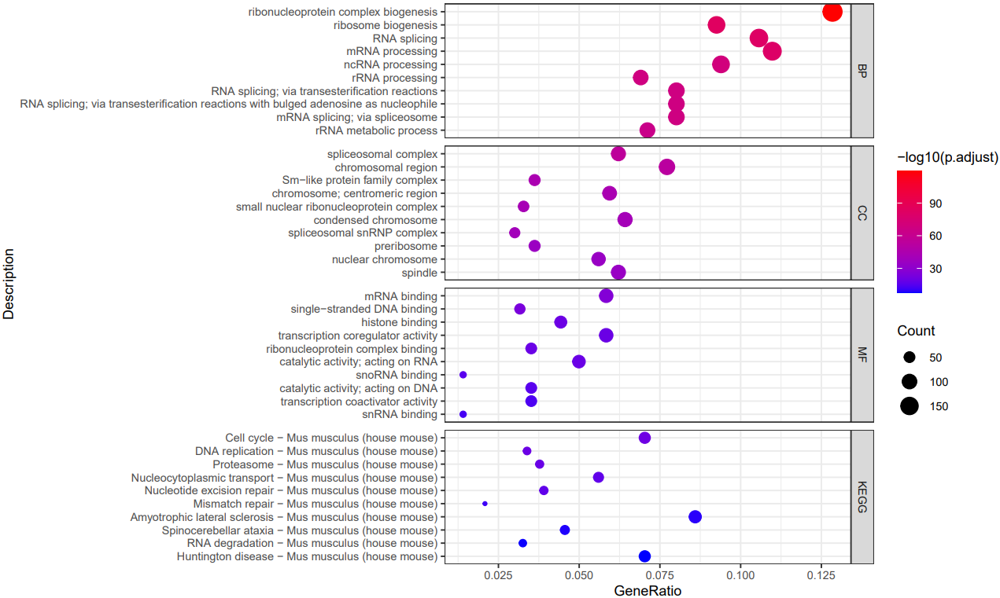
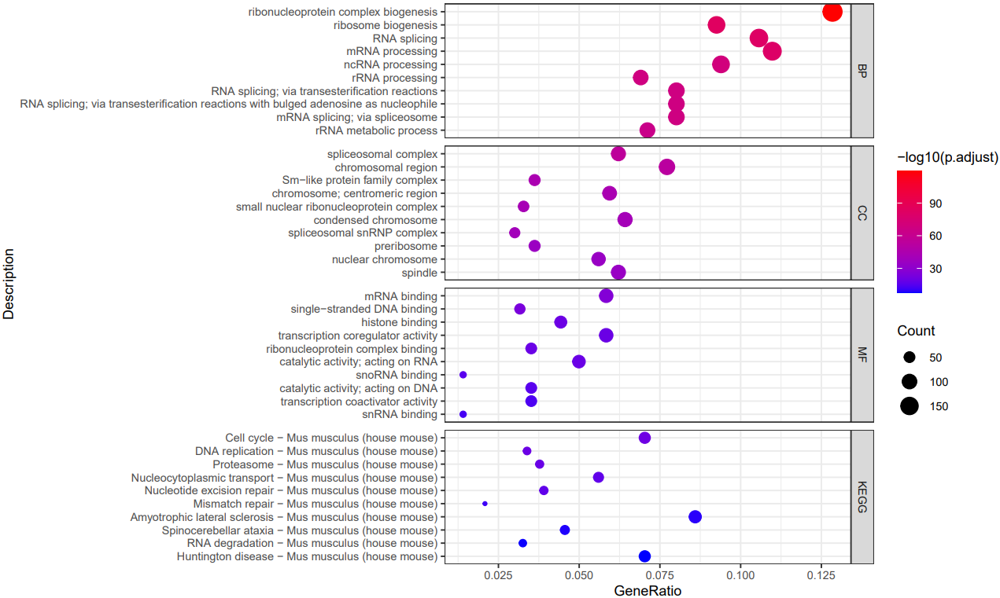
A successful CDesk bulkRNA enrich running process
GO and KEGG functional enrichment analysis'select()' returned 1:1 mapping between keys and columns Reading KEGG annotation online: "https://rest.kegg.jp/link/mmu/pathway"... Reading KEGG annotation online: "https://rest.kegg.jp/list/pathway/mmu"... 'select()' returned 1:1 mapping between keys and columns 'select()' returned 1:1 mapping between keys and columns 'select()' returned 1:1 mapping between keys and columns 'select()' returned 1:1 mapping between keys and columns 'select()' returned 1:1 mapping between keys and columns Warning messages: 1: In bitr(geneID = gene_list$V1, fromType = "SYMBOL", toType = "ENTREZID", : 2.95% of input gene IDs are fail to map... 2: In bitr(geneID = gene_list$V1, fromType = "SYMBOL", toType = "ENTREZID", : 7.14% of input gene IDs are fail to map... 3: In bitr(geneID = gene_list$V1, fromType = "SYMBOL", toType = "ENTREZID", : 4.97% of input gene IDs are fail to map... 4: In bitr(geneID = gene_list$V1, fromType = "SYMBOL", toType = "ENTREZID", : 4.55% of input gene IDs are fail to map... 5: In bitr(geneID = gene_list$V1, fromType = "SYMBOL", toType = "ENTREZID", : 11.92% of input gene IDs are fail to map... 6: In bitr(geneID = gene_list$V1, fromType = "SYMBOL", toType = "ENTREZID", : 5.76% of input gene IDs are fail to map... `summarise()` has grouped output by 'Description'. You can override using the `.groups` argument. Thanks for using ! ^_^ , any question please contact with Bioinformatic Team of Pei
GSEA functional enrichment analysis'select()' returned 1:many mapping between keys and columns Warning message: In bitr(geneID = deg[[gene_col]], fromType = "SYMBOL", toType = "ENTREZID", : 30.98% of input gene IDs are fail to map... Warning message: The `category` argument of `msigdbr()` is deprecated as of msigdbr 10.0.0. ℹ Please use the `collection` argument instead. preparing geneSet collections... GSEA analysis... leading edge analysis... done... Warning messages: 1: In preparePathwaysAndStats(pathways, stats, minSize, maxSize, gseaParam, : There are ties in the preranked stats (0.53% of the list). The order of those tied genes will be arbitrary, which may produce unexpected results. 2: In fgseaMultilevel(pathways = pathways, stats = stats, minSize = minSize, : For some pathways, in reality P-values are less than 1e-10. You can set the `eps` argument to zero for better estimation. Finished, you can see the results now
What should the multiple sample gene list file look like?
file,tag /mnt/kongtianci/MET/Figure/Supplement/JGES_State2_vs_State3_down_genes.txt,JGES /mnt/kongtianci/MET/Figure/Supplement/OSK_State24_vs_State5_down_genes.txt,OSK /mnt/kongtianci/MET/Figure/Supplement/CIP_State23_vs_State45_down_genes.txt,CIP /mnt/kongtianci/MET/Figure/Supplement/EMT_State_jges_up_genes.txt,EMT /mnt/kongtianci/MET/Figure/Supplement/EMT_State_osk_up_genes.txt,1 /mnt/kongtianci/MET/Figure/Supplement/EMT_State_cip_up_genes.txt,2 2 columns: - sample: The single column file of interested genes - tag: Tags in the plot
What should the gsea input file look like?
gene_name,baseMean,log2FoldChange,lfcSE,stat,pvalue,padj,sig Phox2b,337.679717888184,-8.32333166804755,0.86400369255288,-9.63344455560662,5.77601087664193e-22,1.12210563300523e-17,Down L1td1,552.636898659221,-7.7157937298557,0.887162659442186,-8.69715789741095,3.40299769739071e-18,3.30550181336047e-14,Down Trh,197.3493238444,-7.11236432535057,0.826288584220383,-8.6076032770817,7.4603928807163e-18,4.83110174978919e-14,Down Fzd10,645.652817223563,-6.48617125993731,0.841241417025115,-7.71023766622711,1.25583645770636e-14,4.8794269727723e-11,Down Gbx2,353.355281584395,-10.8471785894165,1.40238747773109,-7.73479424314745,1.03570471976181e-14,4.8794269727723e-11,Down Slc30a2,132.986123033677,-10.4000216673093,1.39509420565304,-7.45470924125951,9.00662324733469e-14,2.91619449709952e-10,Down Ccdc194,96.8429459927352,-3.74084782488042,0.503225634743272,-7.43373859876767,1.05570499044739e-13,2.92988297848878e-10,Down Sdk2,148.971566284536,-4.13732932745656,0.559436750790152,-7.3955265212966,1.40849042702872e-13,3.42034294073588e-10,Down Hoxb1,143.449201389946,-7.35475782261237,1.01150821321818,-7.27108067586787,3.56622865484934e-13,7.46203092888191e-10,Down ...... The input of gsea should be a ranked gene list file (e.g., DEG result file). The '--cols' parameter specify the gene column and the column used for sorting.
1.5 bulkRNA: Similarity
CDesk bulkRNA similarity module performs batch effect correction on multiple RNA-seq datasets, followed by gene expression analysis, PCA, and sample correlation analysis, generating corresponding visualizations. It outputs a sample correlation heatmap and PCA plot. If a gene list is provided, the module analyzes the expression patterns of these genes across groups, and visualizes their batch-corrected expression levels and CV² (square of the coefficient of variation) for each group. When more than 20 genes are provided, the module displays the overall expression pattern across all genes rather than individual gene profiles, ensuring clarity and interpretability.
Here is an example about how to use the CDesk bulkRNA similarity module.
CDesk bulkRNA similarity \
-i /.../file_list.txt -o /.../output_directory \
--batch removeBatchEffect --group /.../grouping.csv \
--gene /.../genes.txt
| Parameters(*necessary) | Description | Default value |
|---|---|---|
| -i,--input* | The gene expression list file | |
| -o,--output* | Output directory | |
| --group* | The grouping file | |
| --batch | The batch effect removing method {no,removeBatchEffect,combat} | no |
| --gene | Specify the gene list txt file | ALL |
| --width | Plot width | 10 |
| --height | Plot height | 8 |
If the pipeline runs successfully, it would output a correlation heatmap, a PCA plot and a bar plot showing CV and expression in each group if genes provided.
 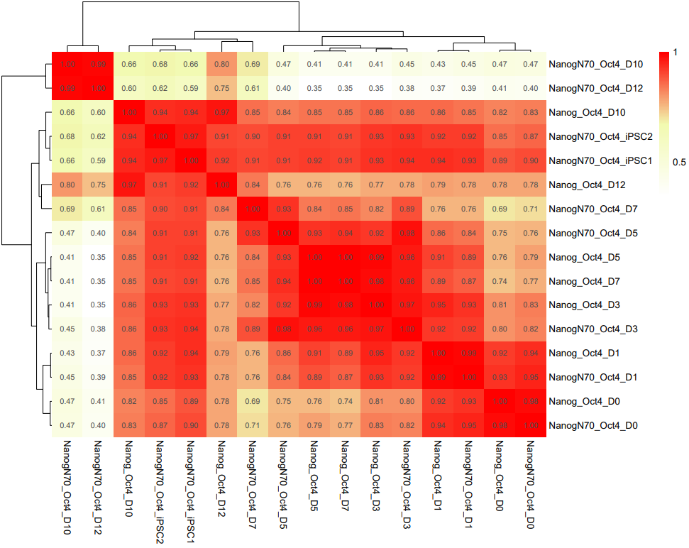
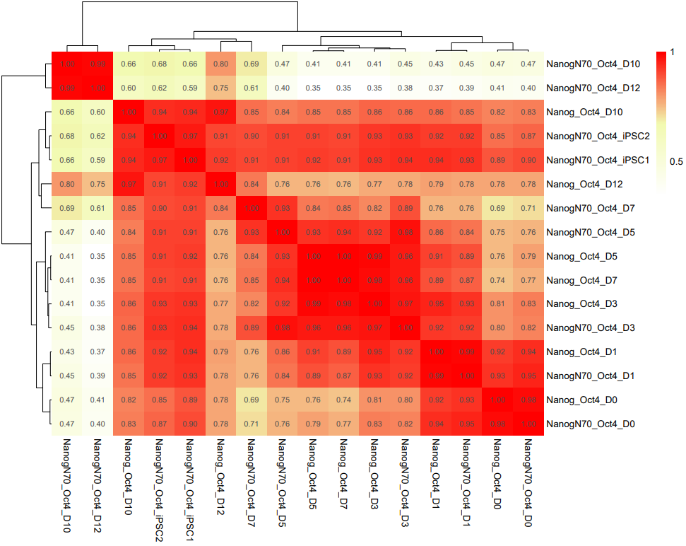
 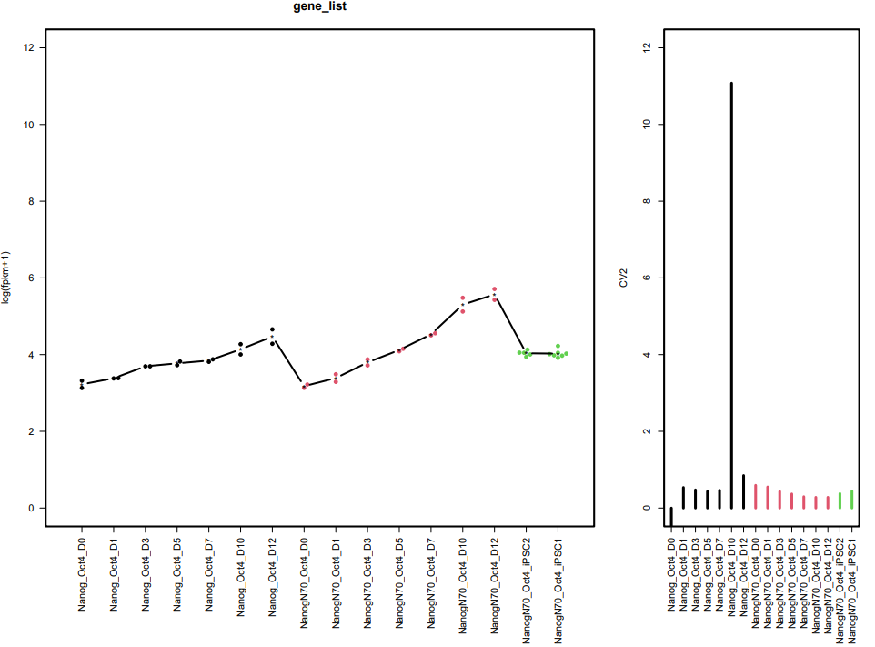
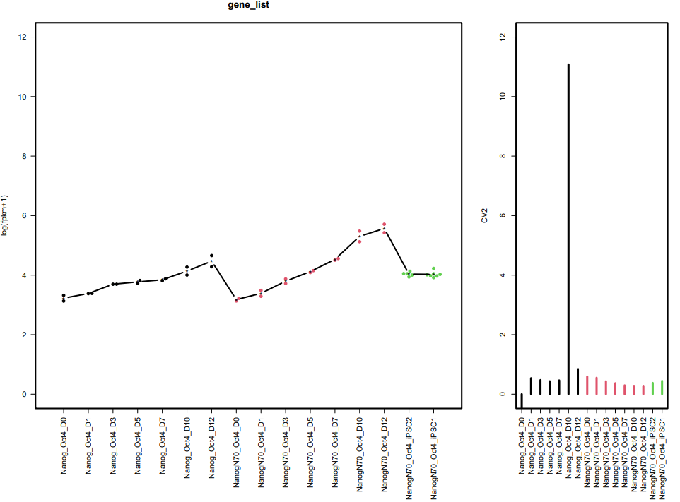
What should the similarity grouping file look like?
sample,group,tag,batch GSM7789776,NanogN70_Oct4,NanogN70_Oct4_D0,1 GSM7789792,NanogN70_Oct4,NanogN70_Oct4_D0,1 GSM7789777,NanogN70_Oct4,NanogN70_Oct4_D1,1 GSM7789793,NanogN70_Oct4,NanogN70_Oct4_D1,1 GSM7789778,NanogN70_Oct4,NanogN70_Oct4_D3,1 GSM7789794,NanogN70_Oct4,NanogN70_Oct4_D3,1 GSM7789779,NanogN70_Oct4,NanogN70_Oct4_D5,1 GSM7789795,NanogN70_Oct4,NanogN70_Oct4_D5,1 GSM7789780,NanogN70_Oct4,NanogN70_Oct4_D7,1 GSM7789796,NanogN70_Oct4,NanogN70_Oct4_D7,1 GSM7789782,NanogN70_Oct4,NanogN70_Oct4_D10,1 GSM7789783,NanogN70_Oct4,NanogN70_Oct4_D12,1 GSM7789797,NanogN70_Oct4,NanogN70_Oct4_D10,1 GSM7789798,NanogN70_Oct4,NanogN70_Oct4_D12,1 GSM7789784,Nanog_Oct4,Nanog_Oct4_D0,1 GSM7789799,Nanog_Oct4,Nanog_Oct4_D0,1 GSM7789785,Nanog_Oct4,Nanog_Oct4_D1,1 GSM7789800,Nanog_Oct4,Nanog_Oct4_D1,1 GSM7789786,Nanog_Oct4,Nanog_Oct4_D3,1 GSM7789801,Nanog_Oct4,Nanog_Oct4_D3,1 GSM7789787,Nanog_Oct4,Nanog_Oct4_D5,1 GSM7789802,Nanog_Oct4,Nanog_Oct4_D5,1 GSM7789788,Nanog_Oct4,Nanog_Oct4_D7,1 GSM7789803,Nanog_Oct4,Nanog_Oct4_D7,1 GSM7789790,Nanog_Oct4,Nanog_Oct4_D10,1 GSM7789791,Nanog_Oct4,Nanog_Oct4_D12,1 GSM7789805,Nanog_Oct4,Nanog_Oct4_D10,1 GSM7789806,Nanog_Oct4,Nanog_Oct4_D12,1 GSM7789807,NanogN70_Oct4_iPSC,NanogN70_Oct4_iPSC2,2 GSM7789808,NanogN70_Oct4_iPSC,NanogN70_Oct4_iPSC1,2 GSM7789809,NanogN70_Oct4_iPSC,NanogN70_Oct4_iPSC1,2 GSM7789810,NanogN70_Oct4_iPSC,NanogN70_Oct4_iPSC1,2 GSM7789811,NanogN70_Oct4_iPSC,NanogN70_Oct4_iPSC2,2 GSM7789812,NanogN70_Oct4_iPSC,NanogN70_Oct4_iPSC2,2 GSM7789813,NanogN70_Oct4_iPSC,NanogN70_Oct4_iPSC2,2 GSM7789814,NanogN70_Oct4_iPSC,NanogN70_Oct4_iPSC2,2 GSM7789815,NanogN70_Oct4_iPSC,NanogN70_Oct4_iPSC1,2 GSM7789816,NanogN70_Oct4_iPSC,NanogN70_Oct4_iPSC1,2 GSM7789817,NanogN70_Oct4_iPSC,NanogN70_Oct4_iPSC1,2 GSM7789818,NanogN70_Oct4_iPSC,NanogN70_Oct4_iPSC1,2 4 columns: sample,group,tag,batch Assign the same color for the same group in the PCA and bar plot. Assign the tag in the PCA and bar plot.
1.6 bulkRNA: Clustering
CDesk bulkRNA cluster module performs clustering analysis of genes. The WGCNA function implements the weighted gene co-expression network analysis (WGCNA) pipeline to explore relationships between gene expression patterns and phenotypic traits. It includes a comprehensive workflow: data preprocessing, sample and gene quality control, filtering of lowly expressed genes, cluster analysis, soft-threshold selection, co-expression network construction, module detection, correlation analysis between modules and traits, and extraction and visualization of key modules and hub genes. The results are output in both graphical and file formats to a specified directory.The kmeans function performs unsupervised k-means clustering on the gene expression matrix, grouping genes with similar expression patterns. It outputs gene membership for each cluster and generates visualizations of expression profiles across different groups, facilitating the identification of co-regulated gene sets.
Here is an example about how to use the CDesk bulkRNA cluster module.
# WGCNA
CDesk bulkRNA cluster WGCNA \
-i /.../expression_matrix.csv \
--pheno /../pheno.csv \
--trait trait -o /.../output_directory
# Kmean
CDesk bulkRNA cluster kmean \
-i /.../expression_matrix.csv -o /.../output_directory \
--group /.../group.csv --gene /.../genes.txt
| Parameters(*necessary) | Description | Default value |
|---|---|---|
| WGCNA | ||
| -i,--input* | The input expression matrix file | |
| -o,--output* | Output directory | |
| --pheno* | The sample trait information file | |
| --trait* | The phenotypes specified to calculate correlations with gene modules | |
| kmean | ||
| -i,--input* | The input expression matrix file | |
| -o,--output* | Output directory | |
| --group* | The grouping file | |
| --cluster | Number of clusters for K-means clustering | 6 |
| --method | Distance measure method to be used for clustering {euclidean,maximum,manhattan,canberra,binary,pearson,abspearson,abscorrelation,correlation,spearman,kendall} | correlation |
| --gene | The gene list txt file to do K-means clustering | |
| --width | Plot width | 10 |
| --height | Plot height | 8 |
If the pipeline runs successfully, for WGCNA analysis, it would output: gene members of each identified module, scatter plots showing the correlation between module eigengenes and trait profiles, heatmap of sample-to-sample similarity, dendrogram (hierarchical clustering tree) of genes, density plot of gene count distribution across samples, heatmap of module-trait associations and cluster plots visualizing gene expression patterns across modules. For kmean analysis, it would output: the list of genes assigned to the cluster, line plots and heatmaps showing the average expression profile of genes within each cluster and an elbow plot for evaluating the optimal number of clusters.
 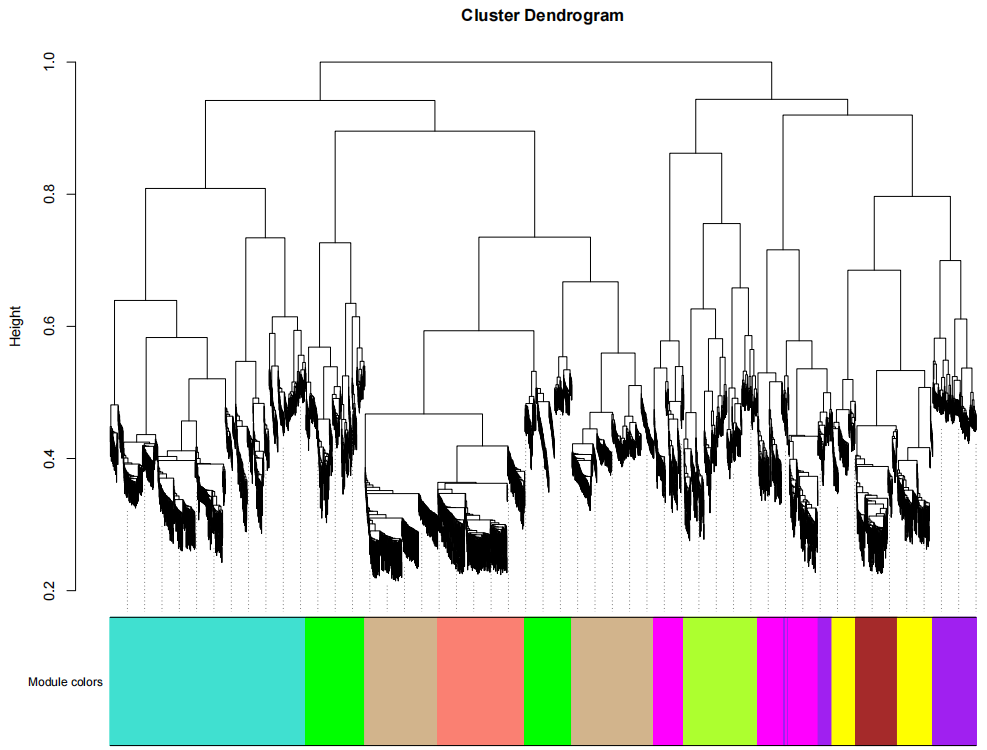
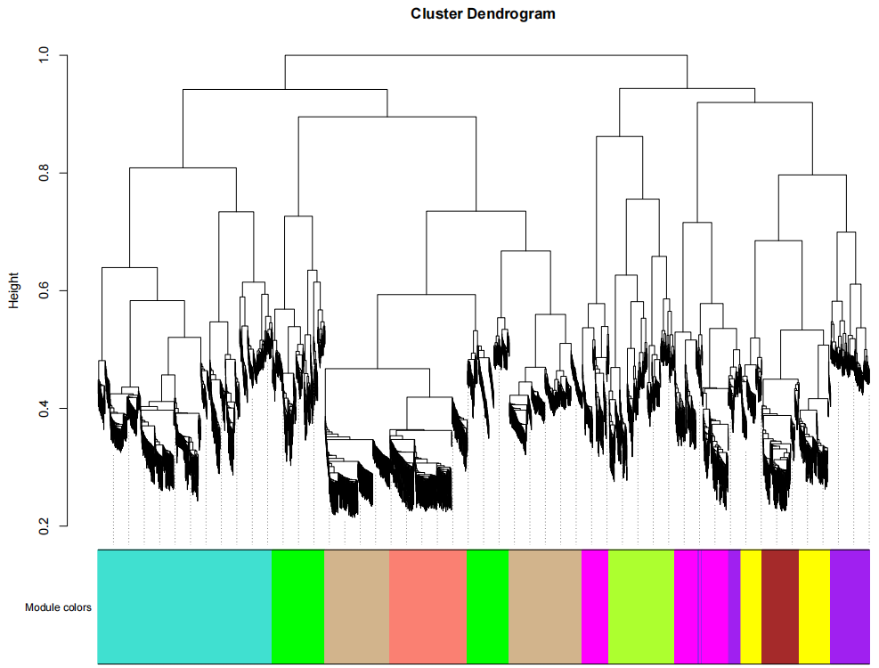
 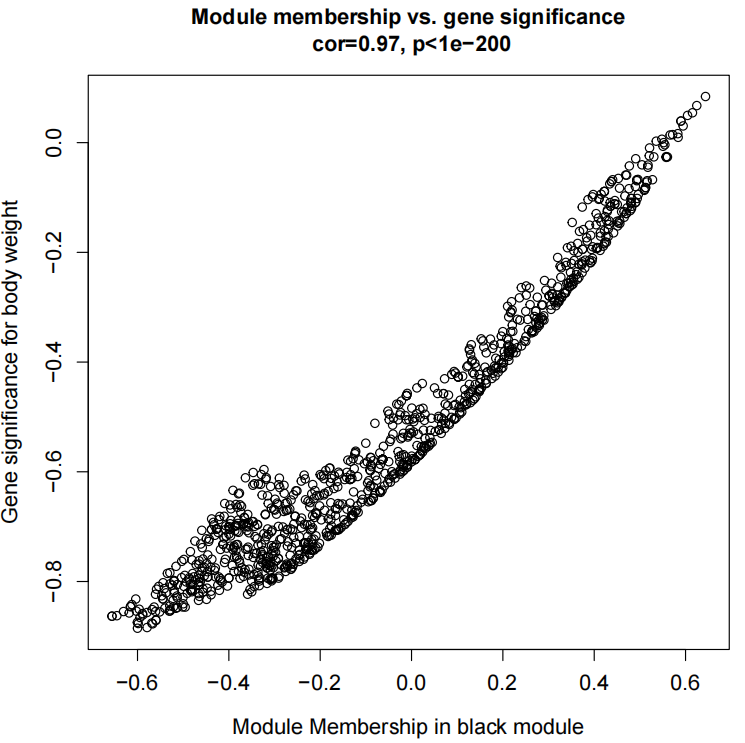
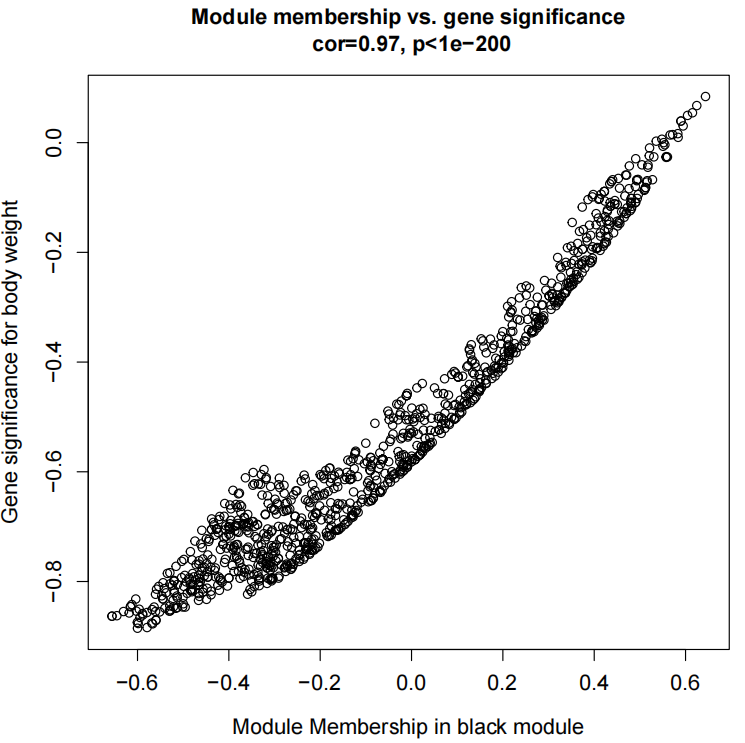

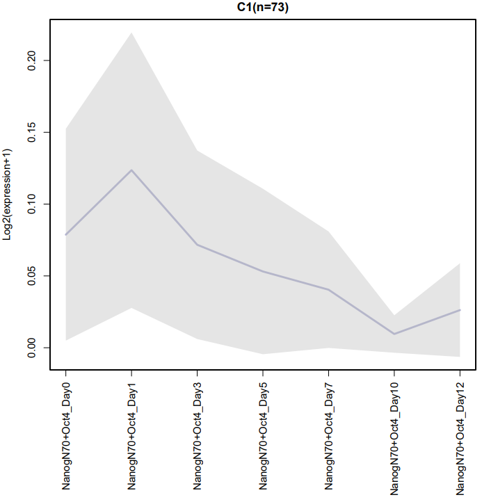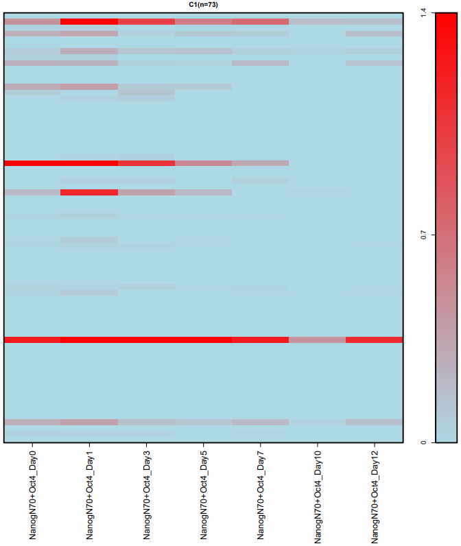
A successful CDesk bulkRNA cluster running process
WGCNATrait value received: tumor Flagging genes and samples with too many missing values... ..step 1 ..Excluding 24458 genes from the calculation due to too many missing samples or zero variance. ..step 2 Warning message: In brewer.pal(num_conditions, "Set1") : minimal value for n is 3, returning requested palette with 3 different levels Warning messages: 1: In type.convert.default(X[[i]], ...) : 'as.is' should be specified by the caller; using TRUE 2: In type.convert.default(X[[i]], ...) : 'as.is' should be specified by the caller; using TRUE pickSoftThreshold: will use block size 1914. pickSoftThreshold: calculating connectivity for given powers... ..working on genes 1 through 1914 of 23369 ..working on genes 1915 through 3828 of 23369 ..working on genes 3829 through 5742 of 23369 ..working on genes 5743 through 7656 of 23369 ..working on genes 7657 through 9570 of 23369 ..working on genes 9571 through 11484 of 23369 ..working on genes 11485 through 13398 of 23369 ..working on genes 13399 through 15312 of 23369 ..working on genes 15313 through 17226 of 23369 ..working on genes 17227 through 19140 of 23369 ..working on genes 19141 through 21054 of 23369 ..working on genes 21055 through 22968 of 23369 ..working on genes 22969 through 23369 of 23369 Power SFT.R.sq slope truncated.R.sq mean.k. median.k. max.k. 1 1 0.55700 2.0200 0.965 13500 14600 16300 2 2 0.32200 0.8260 0.940 10000 11000 13500 3 3 0.15000 0.3990 0.875 8120 8850 11900 4 4 0.04860 0.1840 0.801 6880 7380 10700 5 5 0.00548 0.0544 0.705 6010 6310 9800 6 6 0.00300 -0.0360 0.638 5350 5510 9090 7 7 0.02620 -0.1020 0.565 4830 4880 8500 8 8 0.06340 -0.1500 0.543 4410 4360 8000 9 9 0.11800 -0.1970 0.545 4060 3940 7570 10 10 0.16800 -0.2330 0.554 3760 3580 7190 11 12 0.25800 -0.2940 0.556 3290 3020 6560 12 14 0.35600 -0.3450 0.602 2930 2610 6040 13 16 0.44700 -0.3900 0.649 2640 2270 5610 14 18 0.50700 -0.4210 0.681 2410 2020 5250 15 20 0.55900 -0.4480 0.704 2210 1820 4930 16 22 0.60300 -0.4780 0.733 2050 1640 4660 17 24 0.63700 -0.4970 0.751 1900 1500 4420 18 26 0.66400 -0.5170 0.763 1780 1380 4200 19 28 0.69700 -0.5380 0.787 1670 1280 4010 20 30 0.71800 -0.5540 0.799 1580 1190 3830 Warning message: executing %dopar% sequentially: no parallel backend registered Calculating module eigengenes block-wise from all genes Flagging genes and samples with too many missing values... ..step 1 ....pre-clustering genes to determine blocks.. Projective K-means: ..k-means clustering.. ..merging smaller clusters... Block sizes: gBlocks 1 2 3 4 5 4975 4925 4875 4324 4270 ..Working on block 1 . TOM calculation: adjacency.. ..will not use multithreading. Fraction of slow calculations: 0.000000 ..connectivity.. ..matrix multiplication (system BLAS).. ..normalization.. ..done. ....clustering.. ....detecting modules.. ....calculating module eigengenes.. ....checking kME in modules.. ..Working on block 2 . TOM calculation: adjacency.. ..will not use multithreading. Fraction of slow calculations: 0.000000 ..connectivity.. ..matrix multiplication (system BLAS).. ..normalization.. ..done. ....clustering.. ....detecting modules.. ....calculating module eigengenes.. ....checking kME in modules.. ..Working on block 3 . TOM calculation: adjacency.. ..will not use multithreading. Fraction of slow calculations: 0.000000 ..connectivity.. ..matrix multiplication (system BLAS).. ..normalization.. ..done. ....clustering.. ....detecting modules.. ....calculating module eigengenes.. ....checking kME in modules.. ..Working on block 4 . TOM calculation: adjacency.. ..will not use multithreading. Fraction of slow calculations: 0.000000 ..connectivity.. ..matrix multiplication (system BLAS).. ..normalization.. ..done. ....clustering.. ....detecting modules.. ....calculating module eigengenes.. ....checking kME in modules.. ..Working on block 5 . TOM calculation: adjacency.. ..will not use multithreading. Fraction of slow calculations: 0.000000 ..connectivity.. ..matrix multiplication (system BLAS).. ..normalization.. ..done. ....clustering.. ....detecting modules.. ....calculating module eigengenes.. ....checking kME in modules.. ..merging modules that are too close.. mergeCloseModules: Merging modules whose distance is less than 0.25 Calculating new MEs... Warning messages: 1: In plot.window(xlim, ylim, log = log, ...) : "margins" is not a graphical parameter 2: In title(main = main, sub = sub, xlab = xlab, ylab = ylab, ...) : "margins" is not a graphical parameter Design matrix column names: tumor age gender Saved 347 genes for module purple to /mnt/linzejie/CDesk_test/data/1.RNA/6.Clustering/WGCNA/genes_purple.txt Scatterplot for the module with the highest correlation to the trait: purple saved as PDF. Saved 8032 genes for module tan to /mnt/linzejie/CDesk_test/data/1.RNA/6.Clustering/WGCNA/genes_tan.txt Scatterplot for the module with the highest correlation to the trait: tan saved as PDF. Saved 3262 genes for module blue to /mnt/linzejie/CDesk_test/data/1.RNA/6.Clustering/WGCNA/genes_blue.txt Scatterplot for the module with the highest correlation to the trait: blue saved as PDF. Saved 1125 genes for module turquoise to /mnt/linzejie/CDesk_test/data/1.RNA/6.Clustering/WGCNA/genes_turquoise.txt Scatterplot for the module with the highest correlation to the trait: turquoise saved as PDF. Saved 831 genes for module red to /mnt/linzejie/CDesk_test/data/1.RNA/6.Clustering/WGCNA/genes_red.txt Scatterplot for the module with the highest correlation to the trait: red saved as PDF. Saved 1477 genes for module yellow to /mnt/linzejie/CDesk_test/data/1.RNA/6.Clustering/WGCNA/genes_yellow.txt Scatterplot for the module with the highest correlation to the trait: yellow saved as PDF. Saved 1029 genes for module black to /mnt/linzejie/CDesk_test/data/1.RNA/6.Clustering/WGCNA/genes_black.txt Scatterplot for the module with the highest correlation to the trait: black saved as PDF. Saved 2727 genes for module brown to /mnt/linzejie/CDesk_test/data/1.RNA/6.Clustering/WGCNA/genes_brown.txt Scatterplot for the module with the highest correlation to the trait: brown saved as PDF. Saved 609 genes for module green to /mnt/linzejie/CDesk_test/data/1.RNA/6.Clustering/WGCNA/genes_green.txt Scatterplot for the module with the highest correlation to the trait: green saved as PDF. Saved 1521 genes for module salmon to /mnt/linzejie/CDesk_test/data/1.RNA/6.Clustering/WGCNA/genes_salmon.txt Scatterplot for the module with the highest correlation to the trait: salmon saved as PDF. Saved 1135 genes for module magenta to /mnt/linzejie/CDesk_test/data/1.RNA/6.Clustering/WGCNA/genes_magenta.txt Scatterplot for the module with the highest correlation to the trait: magenta saved as PDF. Saved 667 genes for module pink to /mnt/linzejie/CDesk_test/data/1.RNA/6.Clustering/WGCNA/genes_pink.txt Scatterplot for the module with the highest correlation to the trait: pink saved as PDF. Saved 607 genes for module greenyellow to /mnt/linzejie/CDesk_test/data/1.RNA/6.Clustering/WGCNA/genes_greenyellow.txt Scatterplot for the module with the highest correlation to the trait: greenyellow saved as PDF. Done, result in： /mnt/linzejie/CDesk_test/data/1.RNA/6.Clustering/WGCNA
kmean============= Gene Expression Clustering ============= Running with the following parameters: Count file: /mnt/linzejie/CDesk_test/data/1.RNA/6.Clustering/merged_fpkm.csv Metadata file: /mnt/linzejie/CDesk_test/data/1.RNA/6.Clustering/meta5.csv Output directory: /mnt/linzejie/CDesk_test/data/1.RNA/6.Clustering/kmean1 Number of clusters (k): 6 Figure height: 10 Figure width: 8 Clustering method: correlation Gene list: /mnt/linzejie/CDesk_test/data/1.RNA/6.Clustering/kmean_test.txt ===================================================== Warning messages: 1: In readLines(gene_list) : incomplete final line found on '/mnt/linzejie/CDesk_test/data/1.RNA/6.Clustering/kmean_test.txt' 2: did not converge in 10 iterations Clustering completed successfully! Generated 6 clusters with the following sizes: [1] 96 36 30 24 28 39 Output files: - Cluster gene lists have been saved to: /mnt/linzejie/CDesk_test/data/1.RNA/6.Clustering/kmean1 as cluster_*_gene.Data.txt - Line plots figure has been saved to: /mnt/linzejie/CDesk_test/data/1.RNA/6.Clustering/kmean1/Clusters_line_plot.pdf - Heatmap figure has been saved to: /mnt/linzejie/CDesk_test/data/1.RNA/6.Clustering/kmean1/Clusters_heatmap.pdf
What should the WGCNA input sample trait information file look like?
id,tumor,age,gender scPDd15.5,0,25,male scPDd25.5,0,30,female scwoPDd15.5,1,40,female scwoPDd25.5,1,45,female The first colomun corresponds to the sample columns in the input expression matrix file. The other columns represent sample characteristics and only accept numerical formats. The parameter '--trait' specify the trait to analyze.
What should the kmean grouping file look like?
sample,group GSM7789776,NanogN70+Oct4_Day0 GSM7789777,NanogN70+Oct4_Day1 GSM7789778,NanogN70+Oct4_Day3 GSM7789779,NanogN70+Oct4_Day5 GSM7789780,NanogN70+Oct4_Day7 GSM7789782,NanogN70+Oct4_Day10 GSM7789783,NanogN70+Oct4_Day12 GSM7789792,NanogN70+Oct4_Day0 GSM7789793,NanogN70+Oct4_Day1 GSM7789794,NanogN70+Oct4_Day3 GSM7789795,NanogN70+Oct4_Day5 GSM7789796,NanogN70+Oct4_Day7 GSM7789797,NanogN70+Oct4_Day10 GSM7789798,NanogN70+Oct4_Day12 2 columns: sample,group. Take the average of the same groups to perform kmean clustering.
1.7 bulkRNA: Splice
CDesk bulkRNA splice module provides two main functions. The detect function identifies differential splicing events from BAM files using rMATS, a widely used tool for analyzing alternative splicing in RNA-seq data. rMATS employs a statistical model to quantify splicing event expression in samples (with biological replicates), and uses a likelihood ratio test to compute P-values reflecting differences in Inclusion Level (IncLevel) between two groups. IncLevel is analogous to Percent Spliced In (PSI) in definition. P-values are subsequently adjusted using the Benjamini-Hochberg procedure to control the false discovery rate (FDR). The draw function generates Sashimi plots from BAM files to visually represent differential splicing events.
rMATS can detect five major types of alternative splicing events:
- Skipped Exon (SE)
- Alternative 5′ Splice Site (A5SS)
- Alternative 3′ Splice Site (A3SS)
- Mutually Exclusive Exons (MXE)
- Retained Intron (RI)
The rmats2sashimiplot tool creates Sashimi plot visualizations from rMATS output. It can also generate plots using a gene annotation file (e.g., GTF) and user-specified genomic coordinates, enabling flexible and intuitive visualization of splicing patterns.
Here is an example about how to use the CDesk bulkRNA splice module.
# detect
CDesk bulkRNA splice detect \
--b1 /.../sample1.txt --b2 /.../sample2.txt \
--species species -o /.../output_directory
# draw
CDesk bulkRNA splice draw \
--b1 /.../sample1.txt --b2 /.../sample2.txt -o /.../output_directory \
--region chr16:+:9000:25000 --species species --group /.../grouping.gf
| Parameters(*necessary) | Description | Default value |
|---|---|---|
| detect | ||
| --b1* | The first BAM files txt | |
| -o,--output* | Output directory | |
| -s,--species* | Specify the species | |
| --b2 | The second BAM files txt | No |
| --type | Type of read: paired/single | paired |
| -t,--thread | Number of threads | 10 |
| --length | Length of each read | 150 |
| --variable_read_length | Allow reads with lengths that differ from read Length | |
| --allow_clipping | Allow alignments with soft or hard clipping to be used | |
| draw | ||
| --b1* | The first BAM files txt | |
| -o,--output* | Output directory | |
| --region* | The genome region coordinates: format:{chromosome}:{strand}:{start}:{end} | |
| -s,--species* | Specify the species | |
| --b2 | The second BAM files txt | No |
| --group | The path to a .gf file which groups the replicates | No |
| --l1 | The first sample name | No |
| --l2 | The second sample name | No |
| --exon_s | How much to scale down exon | 1 |
| --intron_s | How much to scale down introns | 1 |
If the pipeline runs successfully, for detect function, it would output the rmats analysis result. For draw function, it would output the Sashimi plot and Sashimi index result folder in the output directory.
 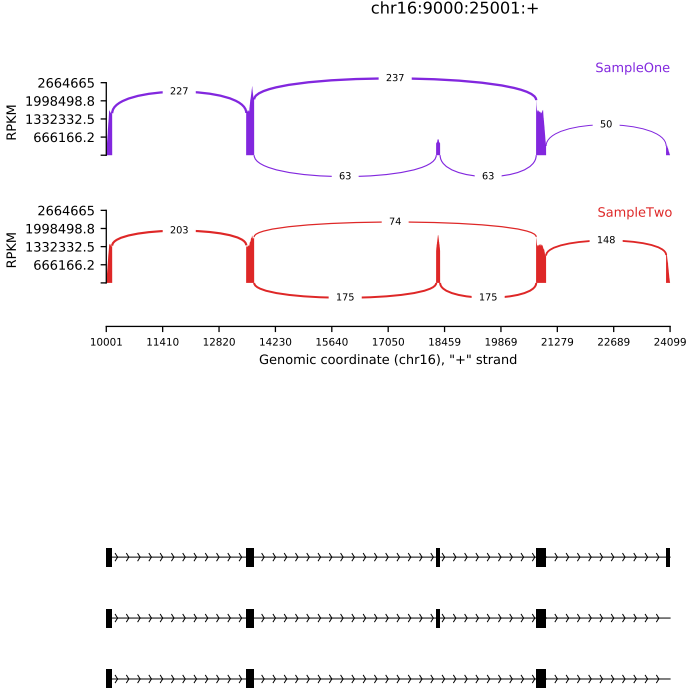
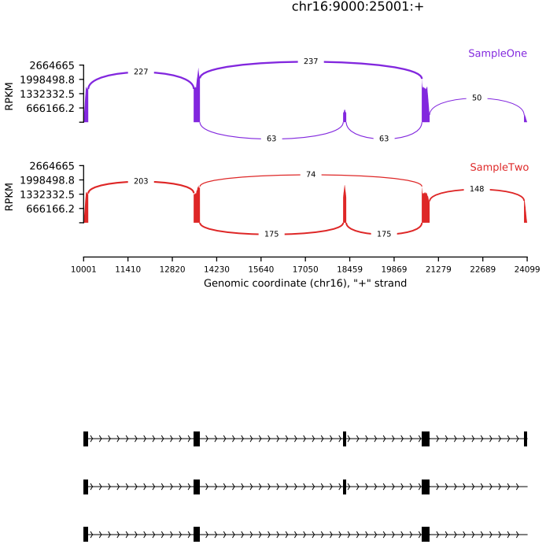
What does the grouping gf file mean?
What does the rmats result mean?
Each line in the *.gf file defines a group. Each line has the format: groupname: indices of mapping files The indices can be a comma (,) separated list of individual numbers ranges specified with dash (-) Important: One-based indexing is used. The order of mapping files corresponds to the order from (--b1 --b2). Index i corresponds to the one-based ith index of the concatenation of either (--b1 and --b2). As an example: --b1 a.bam,b.bam,c.bam --b2 d.bam,e.bam,f.bam with this grouping file firstGroup: 1,4 secondGroup: 1-3,5,6 Defines firstGroup=a.bam,d.bam and secondGroup=a.bam,b.bam,c.bam,e.bam,f.bam